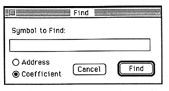

Return to previous page | Return to menu
-
Find function
- If you cannot find the symbol name of the parameter you want to edit immediately in the parameter edit window, you can use the Find command in the Edit menu to search for the symbol name of the coefficient and address constant.

When you execute the Find command, the window shown above appears. Enter the name of the symbol you want to search in the text box, set the "Address / Coefficient" radio button, and click the "Find" button to execute the search.
Return to previous page | Return to menu